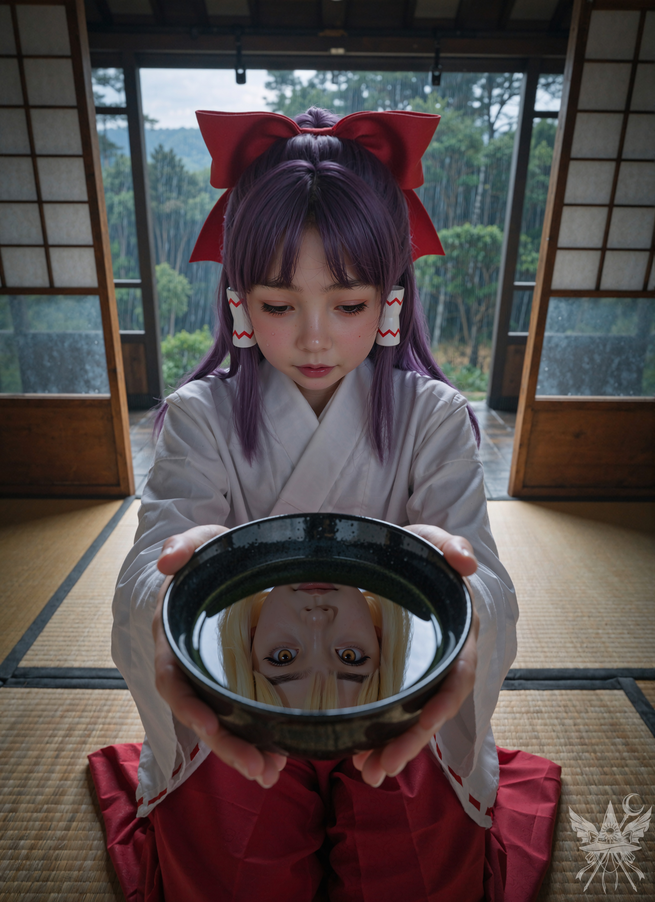
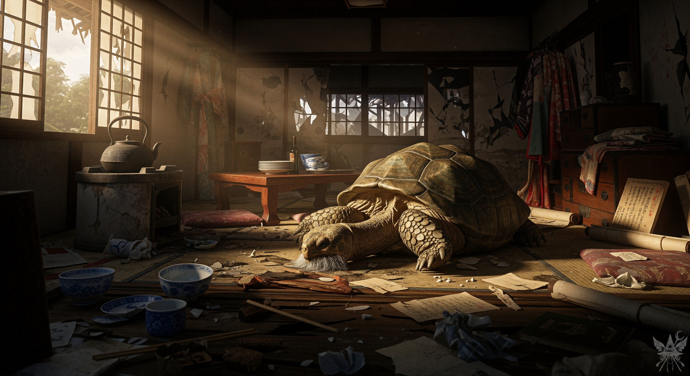

冷たい雨が容赦なく建具を叩き、部屋の中まで湿ったカビの匂いが這い寄ってくる。小さな炬燵に丸まり、すっかり冷め切った緑茶を喉に流し込んでも、頭の奥底にこびりついた「声」は消えなかった。せめて一瞬だけでも静寂が欲しい。しかし、その願いを嘲笑うかのように、雑念はねっとりと脳髄に絡みついてくる。
（もう考えるのはよそう。って、またか… ）
（妖怪だけならまだマシなのに… ）
（そうよ。いつもふらっと現れては、何も残さず消えるんだから。たまにはお賽銭の一つでも置いていってくれてもいいのに… ）
まるでそこにいるかのように、頭の中に魔理沙の声が響く。
（貧乏巫女！）
（うるさい！）
（人混みの中にいても、この孤独は消えない… ）
「うるさい、うるさい、うるさい！」

漆黒の椀の底、揺らぐ水面越しに交わされる視線。水鏡の向こう側からこちらを真っ直ぐに見上げる気配が、閉じた世界での濃密な対話を強要してくる。限界だった。椀に残った茶を一気に飲み干し、手持ち無沙汰を誤魔化すように裁縫道具を引き寄せる。
（あの魔女、調子に乗っちゃって。少し魅魔に教えてもらったからって、この私に勝てるわけないのに）
（フン、今のうちだけよ。あの怠け者の霊夢のことだもの。5年もすれば、アタシが追い抜いてやるんだから）
石鹸を手に取り、白い布切れに印をつける。震える指先が、隠しきれない焦燥を物語っていた。
（神社はいつも人々を助けているっていうのに、人々は神社に何をしてくれるっていうの？）
（鳥居に落書きをする）
（巫女なんだから、そんなことぐらい許してあげないと）
（悪いけど、続けるなら容赦なく首を絞めるわよ）
「痛っ！」
集中が途切れ、鋭い針先が指の腹を突き破った。血の匂いが微かに鼻を突く。
（もう、何もかもうんざり！ こんな世界、変えてやりたい！）
（そうだ、いっそ妖怪みたいに、自由に生きてみない？ 霊夢だって、こんな窮屈な生活、うんざりしているのでしょう？ 自由気ままな巫女…悪くないと思わない？）
いたずらっぽい誘いが、耳元でささやかれる。
（そんなことしたら、幻想郷が滅んでしまう）
（大丈夫。ただの誇大妄想よ）
（そう…かもね）
指から滲む血を乱暴に拭い、裁縫道具を投げ出すように片付けると、逃げるように布団を被った。
（おやすみ）
（おやすみ）
＊＊＊
懲りない悪霊どもに朝から境内を荒らされ、苛立ちは頂点に達していた。玄爺に頼んで追い払う作業を終えたものの、台所は鍋や杓文字が散乱したままだ。

淀んだ空気を切り裂くように、強烈な西日が荒れた部屋の奥底まで突き刺さる。熱を帯びた光の帯の中で無数の埃が舞い踊り、この空間が長らく放置され、乾ききっていることを容赦なく突きつけてくる。古い紙とカビの匂いが入り混じる中、ズズッ、と重苦しい摩擦音が響いた。大きな甲羅が畳を擦り、深い溜息とともに巨体が床に沈み込む。最後の悪霊を追い払った後で、さしもの玄爺も限界なのだろう。
「ちょっと、寝てるんじゃないわよ、おいぼれ爺さん！！」
遠慮のない怒鳴り声が、荒れた部屋に響き渡る。
「御主人様…勘弁してくださいよ。わし、120歳も生きてるんですぞ…」
か細い訴えが返ってきた直後、空気を裂く鋭い風切り音がした。ドスッという鈍い音の直後、玄爺がとっさに頭を引っ込める。
「杓文字、投げるんじゃありませんぞ！」
「投げてないわよ……」
きょとんとして答える。
（でも…投げたかったんでしょ？）
頭の中で、誰かがくすっと笑った気がした。
＊＊＊
自我って何だろう？意識って？「私」は本当に存在するの？境界線はどこにあるの？私と彼女…二つの人格に…。
時折、もう一人の自分に話しかけていた。「彼女」と呼ぶべきなのか…まだ分からなかった。夕暮れ時、霊夢と一緒に縁側でお茶を飲みながら、とりとめのない話をしたのは、今となっては懐かしい思い出だ。彼女にとってはただの独り言でも、私にとってはそれが、確かに「生きている」実感だった。孤独に震える霊夢を励ましたい。そう願って精一杯言葉を紡ぐと、彼女は次第に、どんなことにも私の意見を求めるようになった。参拝客を驚かせたり、杓文字を飛ばして幽霊を追い払ったり…。静まり返っていた神社に、再び生きた熱が戻っていくのを感じた。
あの頃は…楽しかった。本当に。
だが、半年ほど経った頃、霊夢が眠っている間に、玄爺が私に話しかけてくるようになった。
「彼女には内緒じゃぞ」
そう前置きしながら、ひどく重い溜め息をつく。一体、何をそんなに恐れていたのだろう？
そして、霊夢に新しい友達が出来た。あの魔女…魔理沙だ。
あの時、私は取り返しのつかない過ちを犯した。魔理沙に話しかけなければ…いや、存在を主張したこと自体が間違いだった。その結果が、私という存在への明確な宣戦布告に繋がったのだから。今更後悔しても遅い。
私はただ、生きたかった。この意識を持って、世界を感じて…。それは、そんなにいけないことなの？当然の願いじゃない。だから…私は、その戦いを避けられなかった。
＊＊＊
「おい霊夢、本当に大丈夫なのかよ？」
忌々しい魔女の声が、じりじりと肌を焦がすような熱気の中で響く。
「大丈夫なわけないでしょ。ただ、もうこんな暮らし、続けられないのよ。ほら、薬ちょうだい。儀式、始めるわよ」
「馬鹿野郎！ お前、本当に頭がおかしくなっちまうかもしれないんだぜ、霊夢。アタシ以上にさ！ ……まあいい、好きにしろよ」
強烈な悪臭が鼻腔を暴力的に犯し、手渡された液体が鈍く波打つ。
（待って！ 霊夢、どうして？ 私たちはいつも一緒だったじゃない！ 私と一緒なら寂しくないはずよ！ ねえ、霊夢！）
（ごめんね。でも……私は、頭のおかしい人間になるより、寂しいままの方がいいの）
（あなたはただの臆病者よ、霊夢！ 私たちが一緒にいるのがそんなにいけないこと？ 本当は、こんな『友達』がいるせいで、周りから変に思われるのが怖いだけでしょ？！ 霊夢、あなたは本当に臆病者よ！）
「だ・ま・れ」
その声は、幾重にもこだました。
突き抜けるような青空の下、蝉時雨さえも掻き消すような、ゴク、ゴク、という生々しい喉越しの音が境内に響き渡る。喉を焼くような不気味な液体の蒸気が、容赦ない夏の日差しの中に溶けていく。ひどく間の抜けた、しかし後戻りのできない残酷な儀式の音。
空っぽになった瓶が転がり、御幣が力強く振り下ろされた直後、霊夢は糸が切れたようにその場へ崩れ落ちた。
これで終わりだと思った。だが、それは大きな間違いだった。私の人生は、ここからようやく幕を開けたのだ。
実体を持ち、声を出せるようになった。
「カナ・アナベラル」。それが私の新しい名前。けれど、その喜びは陽炎のように儚く消え去った。代償はあまりにも大きかった。唯一の理解者だった霊夢は、もう私のことなど欠片も覚えていなかった。
＊＊＊
「カナちゃん！ ゴミ出しお願い。洗濯物干すのも忘れないでね」
「ちょっと、霊夢。あの幽霊、あんたの神社で何やってるのよ。気味が悪いわ」
「あれは幽霊ってわけじゃなくて……ほかの霊と戦うために、手懐けてるだけなの」
珍しく足を踏み入れた参拝客に向けられた、そのひどく弱腰な言い訳。対等な友人としての態度はとうに消え失せ、いつの間にか私は、厄介者の使用人に成り下がっていた。世間体のためだ、二人きりのときは友達でいると言ってくれたのに。
魔理沙が頻繁に神社に出入りするようになってから、霊夢は次第に「二人きり」の意味さえも忘却の彼方へ追いやってしまったようだった。
＊＊＊
「いにしえの遺跡❤‘夢幻遺跡’……この遺跡に訪れた方には、あなたをしあわせにする何かをプレゼントします」
胡散臭い謳い文句。でも、私の望みだって叶うはずだ。あの日、霊夢もあの遺跡へ向かった。何を願ったのかなんて、考えるまでもなかった。
遺跡に足を踏み入れた瞬間、科学者と魔女に襲撃された。幸せのためなら他者を蹴落とす醜い奪い合い。剥き出しの欲望を見て、吐き気がした。まるで、鏡を見せられているようで。
ただのポルターガイストである私が、なぜ次々と強敵を打ち負かすことができたのか。答えは明白。私には目的があったからだ。愛が欲しかった。認められたかった。ただ、それだけ。
魔理沙との死闘も制し、霊夢とも再会した。運命を確信し、わざとふざけた態度で接して隙を突き、彼女を出し抜いた。
その奥で待ち受けていた二人の“先導者”、夢美とちゆりは、私の存在理由を執拗に問いただしてきた。「お前は何者だ？」と。今思えば、あの時素直に答えていれば……いや、無駄だったに違いない。
勝利の末に手に入れた「ステレオシステム」。言われた通り深夜3時に起動させた結果は、火を見るより明らかだった。限界を迎えた霊夢によって、私は物理的に神社から蹴り出されたのだ。
＊＊＊
霊夢の元を追放され、一人ぼっちになった。行くあてもなく、灰色に霞む幻想郷を彷徨う日々。雪解けの泥濘が凍りつくような、刺すような冷風が吹き抜ける。
重く冷たい陰影となってのしかかる巨大なコンクリートの橋脚。川の流れる無機質な音だけが支配する孤独な空間から見つめる、対岸の家々の窓。そこから漏れる暖色の灯りが、やけに目に沁みた。あの温もりの中に、私の居場所があるような気がしてならないのに、決して手は届かない。
朽ちた橋の下で身を縮め、誰かと心を通わせようと何度も試みた。だが、気づくのは霊感のある人間だけで、決まって気味悪がられ、石を投げられるように追い払われる。
そんな凍える日々の中、一人の老魔女が嗄れた声で囁いた。
「カナ、お前さん、ポルターガイストだろ？ 人間とは違うんだ。仲間の所へ行きな。近くの廃洋館に、お前の仲間がおる」
その言葉だけを残し、老婆は消えた。廃洋館――その言葉は、冷え切った心に小さな火を灯した。
＊＊＊
夕暮れ時、辿り着いたプリズムリバー三姉妹の館。彼女たちが奏でる物悲しい旋律は、私の空っぽな心を不思議と落ち着かせた。
意を決して、「一緒に住まわせてほしい」と頼み込んだ。図々しい願いだとは分かっていたけれど、もう一人でいるのは耐えられなかったのだ。あわよくば、いつか私もソリストとして彼女たちの演奏に加わりたい……そんな身の程知らずな夢さえ抱いていた。
しかし、あっさりと同居を許してくれた彼女たちの言葉に、温かな繋がりを期待した私が馬鹿だった。
「うーん…いいわよ、カナ。その代わり…洗濯してくれる？」
まただ。この忌々しいメイド服のせいだ。霊夢が「愛情を込めて」縫ってくれた、くだらない世間体の象徴。一緒に暮らす？ 冗談じゃない。あいつらの音楽なんて、一瞬で虫酸が走るようになった。どこへ行っても、誰からも認められない。私は生まれつきの欠陥品だというの？
頭が沸騰し、あの姉妹に襲いかかった。だが、結果は無惨な返り討ち。冷たい土の上、森の奥深くへボロ布のように捨てられた。
ポルターガイストは一人では存在を維持できない。エネルギーも、心の拠り所も枯渇していく。初めて突きつけられた絶対的な弱さ。それでも、下らないプライドだけが私をその場に縛り付けた。意地でも、ここから動かない。
冷たい草の上に身を横たえると、指先からゆっくりと熱が奪われていく。
（あなたはただ眠りにつくだけよ、カナ）
意識が暗い底へ沈んでいく。このまま、誰の記憶にも残らず消えていくのだ。
「ねえねぇ、ソクラテス！ 見て見て！ あそこに女の子が倒れてるよ！ あらあら、大丈夫かしら？ 顔色が悪いみたいだし…そうだ！ うちに連れて帰ってあげましょっ！」
[SYSTEM ALERT: 音響兵器デプロイ完了]
▼ 本章の絶望を1000%味わうための専用聴覚データ ▼
■ YouTube：『Poltergeist's Masquerade（騒霊の仮面舞踏会）』